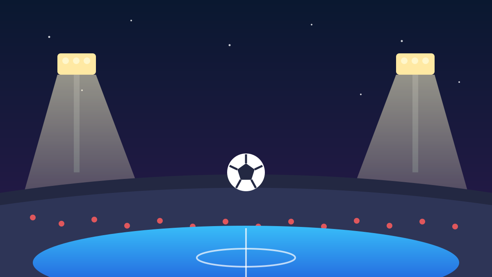

Messi Pensiun dari Timnas Argentina! Ronaldo Kirim Pesan Menyentuh 🐐
📅 9 Oktober 2026⏱️ 1 menit baca
1 / 6

⚽ OLAHRAGA
Era GOAT Resmi Berakhir di Timnas
Setelah 21 tahun, La Pulga mainkan laga terakhirnya — dan rival abadinya justru yang paling menyentuh. Geser →
2 / 6
🏟️
Laga Terakhir: Argentina 3-0 Benin
Messi menutup karier internasional di Estadio Monumental, Buenos Aires, pada Rabu (7/10) pagi WIB. Ia tampil gemilang: satu gol dan dua assist dalam kemenangan 3-0 atas Benin.
3 / 6
📊
21 Tahun, 208 Laga, 126 Gol
Catatannya: 208 caps, 126 gol, 70 assist. Trofi level seniornya komplet — satu Piala Dunia, dua Copa America, dan satu Finalissima. Nggak heran dipanggil yang terbaik sepanjang masa.
4 / 6
💬
Pesan Ronaldo: "Kisah yang Hidup Selamanya"
Cristiano Ronaldo ninggalin komentar di unggahan perpisahan Messi: "Leo, bertahun-tahun membela negaramu dan itu adalah kisah yang akan hidup selamanya. Kamu mendapatkan seluruh rasa hormat saya." Peluk hangat dari rival seumur karier.
5 / 6
👑
Messi: Sudah Rindu Jersey Biru-Putih
Lewat Instagram, Messi bilang ia sudah merindukan momen memakai jersey Argentina. Ia berterima kasih ke keluarga, rekan setim, pelatih, dan klubnya — plus penghormatan khusus buat Diego Maradona.
6 / 6
🤔
Efeknya ke lo apa?
Lo resmi jadi saksi hidup akhir salah satu era terbesar sepak bola. Nomor punggung 10 Argentina sekarang jadi rebutan generasi baru, dan Messi fokus ke klub. Yang ngefans dari bocil sampai sekarang — simpan momen ini, ini sejarah. 🐐
👆 geser kartunya
Gimana menurut lo?
🤖 Artikel ini disusun dengan bantuan AI dari berbagai sumber publik dan telah disunting manusia.